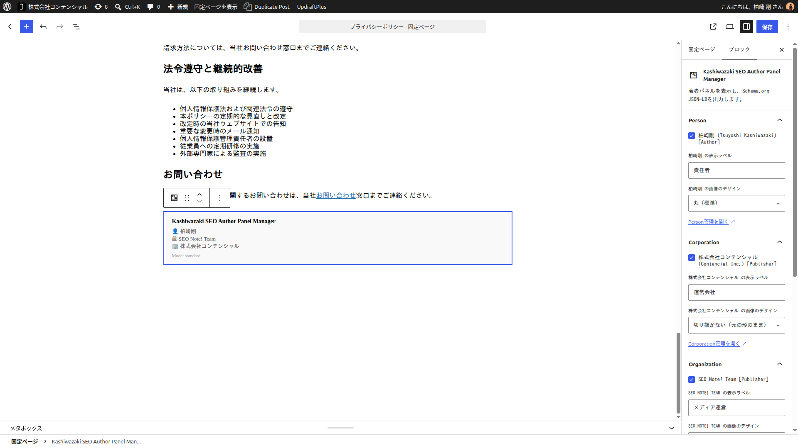
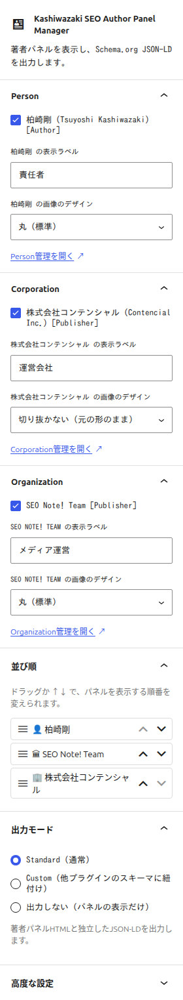
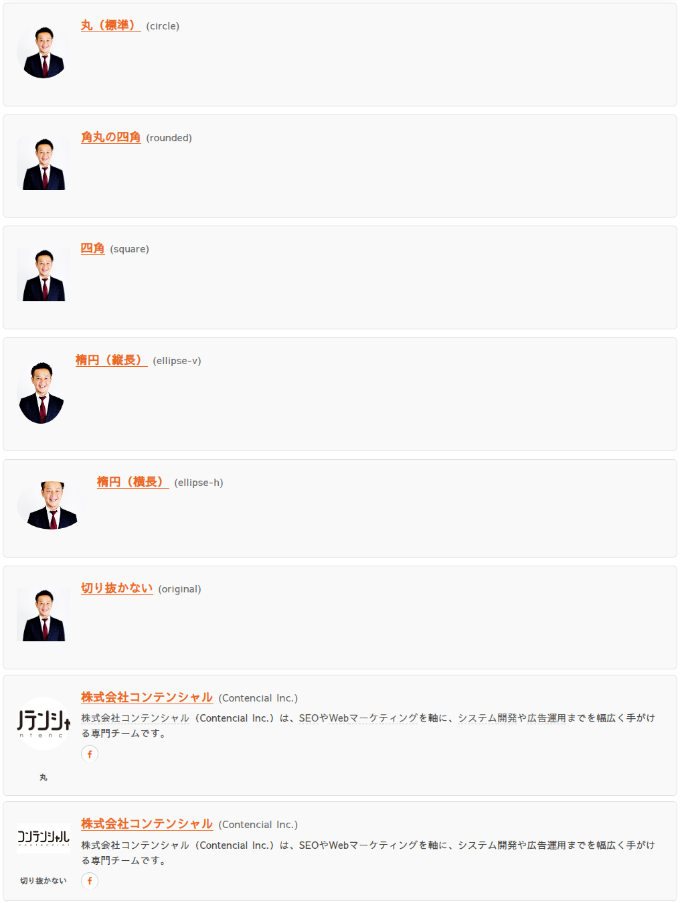
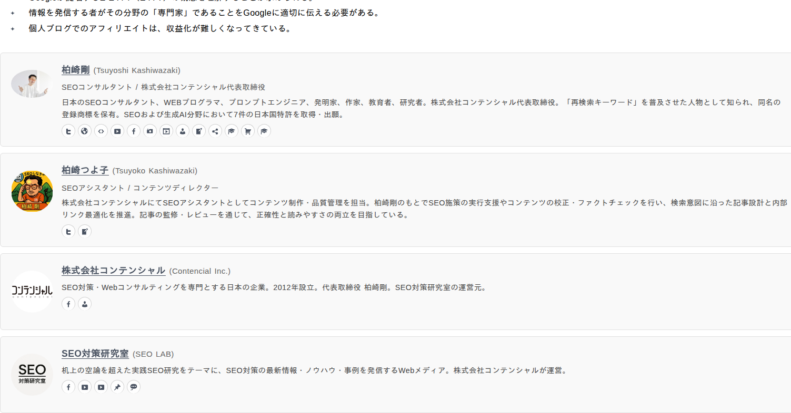

ショートコード＆ブロック
記事本文に著者パネルを挿入する 2 つの方法（Gutenberg ブロックと [author_panel] ショートコード）の全属性・JSON-LD 出力・ネストブロック対応・REST API 経由のエンティティ取得までを解説します。
ブロックとショートコードは内部的に同じレンダラー（KAPM_Shortcode::render()）を共有しており、どちらで挿入しても HTML 出力と JSON-LD 出力は同一です。ブロックはキャメルケース属性（targetSchemaId）、ショートコードはスネークケース属性（target_schema_id）という表記差があるだけで、KAPM_Gutenberg::render_block() が内部で属性名を変換してから共通レンダラーへ渡しています。
Gutenberg ブロック
ブロック名: kapm/author-panel（カテゴリ widgets、アイコン id-alt）。ブロック追加メニューで「著者」「author」「Kashiwazaki」などで検索できます。
投稿・固定ページの編集画面で +（ブロック追加） ボタンをクリックし、検索欄に author や kashiwazaki を入力します。
Kashiwazaki SEO Author Panel Manager ブロックを選択して挿入します。挿入直後は「エンティティ未選択」のプレースホルダが表示されます。
右サイドバー（InspectorControls）の Person / Corporation / Organization パネルから、表示したいエンティティをチェックボックスで選択します。チェック直後に「◯◯ の表示ラベル」入力欄と「◯◯ の画像のデザイン」セレクトが現れます。
エンティティを 2 件以上選ぶと 並び順 パネルが現れます。行の左端の「≡」をつかんでドラッグするか、行の右の ↑↓ ボタンで、パネルを表示する順番を変えられます。
出力モード パネルで Standard / Custom / 出力しない を選びます。Custom 選択時は「紐付け先スキーマの @id」入力欄が追加表示され、空のままだと警告が出ます。

ブロック属性リファレンス（全 8 属性）
includes/class-gutenberg.php の register_block_type() で定義されている 8 個の属性です。すべて string 型で、デフォルト値は空文字またはそれに準じる値になっています。
| 属性名（キャメル） | 型 | 既定値 | 内容 |
|---|---|---|---|
persons |
string |
'' |
表示する Person エンティティ ID のカンマ区切りリスト（例: "1,3,5"）。 |
corporations |
string |
'' |
表示する Corporation エンティティ ID のカンマ区切りリスト。 |
organizations |
string |
'' |
表示する Organization エンティティ ID のカンマ区切りリスト。 |
mode |
string |
'standard' |
JSON-LD 出力モード。standard（独立 @graph を本文内に出力）、custom（既存スキーマの @id に紐付けて wp_head に出力）、none（JSON-LD を出力せずパネルだけ表示。v1.0.3 で追加）の 3 種。 |
targetSchemaId |
string |
'' |
Custom モードで紐付け先スキーマの @id を指定します。空のまま Custom モードを選んだ場合、Custom JSON-LD は出力されません（HTML パネルのみ表示）。 |
labels |
string |
'{}' |
エンティティごとの表示ラベル（「執筆者」「監修者」等）を格納した JSON 文字列。キー形式は person-{id} / corp-{id} / org-{id}。JSON として不正な場合は空オブジェクトとして扱われます。 |
imageStyles |
string |
'{}' |
エンティティごとの画像のデザインを格納した JSON 文字列（例: {"person-1":"ellipse-v","corp-1":"original"}）。キー形式は labels と同じ。値は後述「画像のデザイン」の 6 種で、それ以外の値や未指定のエンティティは circle（丸）になります。既定の丸は保存されません（v1.0.3 で追加）。 |
order |
string |
'' |
パネルの並び順。キーのカンマ区切り（例: "person-1,org-1,corp-1"）。空のときは Person → Corporation → Organization の順。person-{id} / corp-{id} / org-{id} の形でない値は無視され、並び順に含まれないパネルは既定の順で後ろに付きます（v1.0.3 で追加）。 |
サイドバー UI の 5 パネル構成
assets/js/gutenberg-sidebar.js の InspectorControls では、以下の 5 つの PanelBody が配置されます。
| パネル名 | 主な UI 要素 | 操作対象の属性 |
|---|---|---|
| Person | 登録済み Person の一覧をチェックボックスで表示。チェック中のエンティティごとに「◯◯ の表示ラベル」TextControl（placeholder: 「例: 執筆者、監修者など」）と、その下に「◯◯ の画像のデザイン」SelectControl が展開。下部に「Person管理を開く」リンク。 | persons, labels / imageStyles（person-{id} キー） |
| Corporation | 登録済み Corporation のチェックボックス一覧、ラベル入力欄（placeholder: 「例: 運営会社、スポンサーなど」）と画像のデザイン。 | corporations, labels / imageStyles（corp-{id} キー） |
| Organization | 登録済み Organization のチェックボックス一覧、ラベル入力欄（placeholder: 「例: 運営メディア、発行元など」）と画像のデザイン。 | organizations, labels / imageStyles（org-{id} キー） |
| 並び順 | エンティティを 2 件以上選んだときだけ表示。選んだパネルが 1 行ずつ並び、左端の「≡」をつかんでドラッグするか、右の ↑（上へ）・↓（下へ）ボタンで順番を入れ替えます。先頭の ↑ と末尾の ↓ は押せません（v1.0.3 で追加）。 | order |
| 出力モード | RadioControl で Standard（通常）／Custom（他プラグインのスキーマに紐付け）／出力しない（パネルの表示だけ）の 3 択。Custom 選択時のみ TextControl「紐付け先スキーマの @id」が表示されます（placeholder: https://example.com/#article）。Custom で @id が空のときは、黄色の警告「紐付け先スキーマの@idが空のため、構造化データは出力されません。…」が表示されます。 |
mode, targetSchemaId |

サイドバーに並ぶチェックボックス一覧は、編集画面初期化時に fetch() で /wp-json/kapm/v1/persons／corporations／organizations の 3 エンドポイントから全件取得しています。X-WP-Nonce ヘッダーに kapmData.nonce（wp_rest nonce）を付与し、権限は current_user_can('edit_posts')。詳細は REST API 仕様を参照してください。
ブロックのプレビュー表示
エンティティが 1 件以上選択されている場合、ブロック本体にプレビュー枠が表示されます。Person は 👤、Corporation は 🏢、Organization は 🏛 のアイコン付きで登録名が並び順のとおりに並び、下部に現在の Mode と（Custom 時は）Target が表示されます。Custom で @id が空のときは、ここにも赤字で警告が出ます。選択ゼロの場合は WordPress 標準の Placeholder コンポーネントで「右サイドバーから選択してください」と表示されます。
画像のデザイン
人物の写真や法人・組織のロゴの形を、記事ごと・エンティティごとに選べます（v1.0.3 で追加）。共通の見た目（パネルのデザインとカラー）はエンティティの編集画面で、画像の形はこのブロックで決める、という分担です。
| サイドバーの表示名 | 値 | 表示サイズ | 形 |
|---|---|---|---|
| 丸（標準） | circle | 80×80px | 正円に切り抜き。未指定時はこれ（v1.0.2 までと同じ） |
| 角丸の四角 | rounded | 80×80px | 角の丸み 12px の正方形 |
| 四角 | square | 80×80px | 角丸なしの正方形 |
| 楕円（縦長） | ellipse-v | 72×96px | 縦長の楕円に切り抜き。人物写真向け |
| 楕円（横長） | ellipse-h | 104×72px | 横長の楕円に切り抜き |
| 切り抜かない（元の形のまま） | original | 幅 80px・高さは元画像の比率 | 切り抜かずに全体を表示。横長のロゴ向け |

丸・四角・楕円は画像を枠いっぱいに広げて（object-fit: cover）はみ出た部分を切り取ります。横長のロゴを丸にすると左右が欠けるので、ロゴは「切り抜かない」か「楕円（横長）」がおすすめです。
ショートコード [author_panel]
クラシックエディタで記事本文にショートコードを書く場合や、ウィジェット・テーマテンプレートから do_shortcode() で呼び出す場合はショートコードを利用します。
preparse_custom_mode() は template_redirect で現在投稿の $post->post_content を直接パースして Custom モードを検出します。そのため、ウィジェットエリア・テーマテンプレート (header.php / footer.php / sidebar.php 等)・ブロックパターン・フッター CPT からの do_shortcode() 呼び出しは Custom モードの JSON-LD には含まれません（HTML パネル自体は正常に出力されます）。テンプレートやウィジェットで著者パネルを出したい場合は、Standard モードのみ利用可能と考えてください。
最小構文:
[author_panel persons="1,2" corporations="3"]Custom モードで Yoast SEO などが出力した記事スキーマに紐付ける例:
[author_panel persons="1" corporations="3" mode="custom" target_schema_id="https://example.com/post/#article"]並び順・画像のデザインを指定し、構造化データは出さない例:
[author_panel persons="1" corporations="3" mode="none" order="corp-3,person-1" image_styles='{"corp-3":"original"}']ショートコード属性リファレンス（全 8 属性）
ブロックと完全対応していますが、属性名がスネークケースに変わる点と target_schema_id のアンダースコア表記に注意してください。
| 属性名 | 既定値 | 内容・注意点 |
|---|---|---|
persons | '' | Person ID のカンマ区切りリスト。parse_ids() で absint() + array_filter 処理されるため、0 や不正値（文字列、負数）は自動的に捨てられます。 |
corporations | '' | Corporation ID のカンマ区切りリスト。処理ルールは persons と同じ。 |
organizations | '' | Organization ID のカンマ区切りリスト。処理ルールは同上。 |
mode | 'standard' | JSON-LD 出力モード。standard（本文内に出力）、custom（<head> 内で既存スキーマに紐付け）、none（出力しない）。JSON-LD を出すのは standard と custom のときだけで、それ以外の値では JSON-LD は出力されません。 |
target_schema_id | '' | Custom モードでの紐付け先 @id。Custom モードでこれが空だと Custom 側の JSON-LD は一切出力されません（HTML パネルのみ表示）。 |
labels | '{}' | 表示ラベルの JSON 文字列。json_decode() が失敗した場合は空配列扱いになり、ラベルは表示されません。 |
image_styles | '{}' | 画像のデザインの JSON 文字列（ブロックの imageStyles に対応）。許可された 6 値以外は捨てられ、丸になります（v1.0.3 で追加）。JSON の中に " を使うため、属性値はシングルクォートで囲んでください。 |
order | '' | 並び順（ブロックの order に対応）。corp-3,person-1 のようにキーをカンマ区切りで指定します（v1.0.3 で追加）。 |
persons / corporations / organizations のすべてが空文字、または parse_ids() 後にすべて空配列になった場合、ショートコードは空文字 '' を返します（HTML にも JSON-LD にも何も出力されません）。指定した ID のエンティティが DB から見つからなかった場合も同様です。
JSON-LD 出力（Standard モード）
Standard モードでは、HTML パネルの直後に <script type="application/ld+json"> で独立した JSON-LD が埋め込まれます。出力される構造は @context + @graph で、@graph に Person / Corporation / Organization の各ノードが並びます。
例: Person 1 人 + Corporation 1 社を挿入した場合の出力（整形済み）:
<!-- Kashiwazaki SEO Author Panel Manager - Standard Mode JSON-LD -->
<script type="application/ld+json">
{
"@context": "https://schema.org",
"@graph": [
{
"@type": "Person",
"@id": "https://example.com/profile/#person-1",
"name": "柏崎 剛",
"alternateName": "Tsuyoshi Kashiwazaki",
"jobTitle": "SEO エンジニア",
"description": "〜〜〜",
"image": {
"@type": "ImageObject",
"url": "https://example.com/avatar.jpg"
},
"url": "https://example.com/profile/",
"sameAs": [
"https://x.com/username",
"https://github.com/username"
]
},
{
"@type": "Corporation",
"@id": "https://example.com/company/#corporation-3",
"name": "株式会社サンプル",
"alternateName": "Sample Corporation",
"description": "〜〜〜",
"url": "https://example.com/company/",
"logo": {
"@type": "ImageObject",
"url": "https://example.com/logo.png"
},
"sameAs": ["https://x.com/sample_corp"]
}
]
}
</script>
<!-- / Kashiwazaki SEO Author Panel Manager -->各エンティティの @id は {エンティティの url}#person-{id} / #corporation-{id} / #organization-{id} の形で生成されます。エンティティの url が空の場合、ベース URL は home_url('/')（サイトのホーム URL）にフォールバックします。
未入力のフィールドに対応する JSON プロパティは出力されません（'' や null ではなくキー自体が省略されます）。例えば Person で英語名が未入力なら alternateName は存在せず、sameAs が 1 件も有効 URL を含まなければ sameAs プロパティそのものが出ません。
JSON-LD 出力（Custom モード）
Custom モードは、他プラグイン（Yoast SEO、Rank Math、SEO SIMPLE PACK 等）が <head> 内に出力している Article / NewsArticle / WebPage などの既存スキーマへ、本プラグインのエンティティを プロパティとして紐付けるための出力方式です。
Custom モードの動作フロー
template_redirect で preparse_custom_mode() が走り、is_singular() が真のときのみ（個別投稿・固定ページ・個別カスタム投稿のみ）、現在の投稿の post_content をパースします。
parse_blocks() でブロック配列を取得し、scan_blocks_for_custom() が再帰的に走査。kapm/author-panel ブロックを検出するたびに、mode === 'custom' かつ targetSchemaId が非空であれば対象としてメモリに保持します。Group / Columns / Row など innerBlocks を持つコンテナ内のネストブロックも検出されます。
同じ preparse_custom_mode() がショートコード形式 [author_panel ... mode="custom"] を get_shortcode_regex() で検出し、shortcode_parse_atts() でパースして同様にメモリに保持します。
wp_head（優先度 99、</head> 直前に近い）で output_custom_json_ld() が、収集した全 Custom データを 1 つずつ <script type="application/ld+json"> として出力します。
Custom モードで「紐付け先スキーマの @id」が空のときは、Custom の JSON-LD は作られず、本文側（Standard）の JSON-LD も出ません。ブロックエディタではこの状態を黄色の警告で知らせます。構造化データが不要なら、出力モードを「出力しない」にしてください。
preparse_custom_mode() は is_singular() でガードされているため、カテゴリーアーカイブ・タグアーカイブ・検索結果・ホームページでは Custom 側の JSON-LD は出力されません。アーカイブ系で著者パネルを出したい場合は Standard モードを使用してください。HTML パネル自体（ショートコード本体の出力）はこの制約の対象外です。
Custom モードの JSON-LD 出力例
例: Yoast SEO が Article を @id: "https://example.com/post-slug/#article" で出力しているページに、Person 1（role=Author）と Corporation 3（role=Publisher）を紐付けた場合の Custom 側出力:
<!-- Kashiwazaki SEO Author Panel Manager - Custom Mode JSON-LD -->
<script type="application/ld+json">
{
"@context": "https://schema.org",
"@graph": [
{
"@type": "Person",
"@id": "https://example.com/profile/#person-1",
"name": "柏崎 剛",
"url": "https://example.com/profile/",
"sameAs": ["https://x.com/username"]
},
{
"@type": "Corporation",
"@id": "https://example.com/company/#corporation-3",
"name": "株式会社サンプル",
"url": "https://example.com/company/"
},
{
"@id": "https://example.com/post-slug/#article",
"author": { "@id": "https://example.com/profile/#person-1" },
"publisher": { "@id": "https://example.com/company/#corporation-3" }
}
]
}
</script>
<!-- / Kashiwazaki SEO Author Panel Manager -->最後のノードは @id だけの「参照ノード」で、ブロック側で指定した target_schema_id がそのまま入ります。このノードに author / publisher などのプロパティが @id 参照として追加され、他プラグインの Article ノードと同一 @id であれば Google 等のパーサ側でマージ解釈されます。
role_to_property() による分岐
上記例の author / publisher プロパティ名は、各エンティティの role フィールド値を role_to_property() で変換した結果です。全 9 分岐のマッピングは エンティティ管理ページの Role 変換表を参照してください。
同じ role に複数エンティティが紐付いた場合（例: 共著で Person が 2 人、どちらも Author）、2 人目以降は配列形式にまとめられ、"author": [ {"@id": "..."}, {"@id": "..."} ] の形で出力されます。
1 記事内で複数のブロック／ショートコードを挿入し、一方を Standard、もう一方を Custom にすることもできます。Standard は本文内、Custom は <head> 内と出力先が分かれているため衝突しません。
出力しない（none）モード
出力モードで 出力しない（パネルの表示だけ） を選ぶと、HTML パネルだけを表示し、本プラグインの JSON-LD は一切出力しません（v1.0.3 で追加）。別のプラグインやテーマが同じ人物・組織の構造化データをすでに出していて、見た目のパネルだけを使いたいページ向けです。
フロントエンド HTML 出力

HTML はルート要素 .kapm-author-panel の中に、エンティティごとのカード .kapm-author-card を flex で並べる構造です。各カードにはエンティティ種別（.kapm-person / .kapm-corporation / .kapm-organization）、パネルのデザイン（.kapm-style-default ほか）、パネルのカラー（.kapm-color-auto ほか）、画像のデザイン（.kapm-image-circle ほか）の 4 つのクラスが付きます。カラーが「カスタム」のときは、カードの style 属性に CSS 変数（--kapm-bg など）が出力されます。カードの並びは、ブロックの並び順（order）に従います。
Person のカード内では、名前が URL にリンクされる際に rel="author" 属性が付きます（Corporation / Organization のリンクには付きません）。これは Person 特有の扱いで、検索エンジンに対して「この記事の著者リンク」であることを伝える役割があります。
フロントエンド CSS（public/css/panel-style.css、実測 8,042 バイト）は、ショートコードが render() される時点で wp_enqueue_style() されます。著者パネルが挿入されていないページでは CSS は読み込まれません。フロントエンド側で独自 JavaScript は一切使用しません（Core Web Vitals に追加の JS 評価コストを発生させません）。
sameAs アイコンマッピング全 45 ドメイン
エンティティの sameAs URL は、フロント側で Dashicons アイコン付きリンクとして表示されます。URL のホスト名から自動的にサービスを判定し、以下 45 パターンのいずれかにマッチすれば対応アイコン、マッチしなければ dashicons-admin-site（汎用 Web サイトアイコン）が使われます。
マッチロジック: wp_parse_url($url, PHP_URL_HOST) で取得したホスト名から www. を取り除き、マップキーと完全一致するか、末尾ドット付きキー（例: amazon.）で前方一致するかを判定します。
SNS・コミュニケーション系
| ドメインパターン | Dashicons クラス | サービス |
|---|---|---|
x.com | dashicons-twitter-alt | X (旧 Twitter) |
twitter.com | dashicons-twitter-alt | Twitter (旧ドメイン) |
facebook.com | dashicons-facebook-alt | |
instagram.com | dashicons-camera | |
linkedin.com | dashicons-businessperson | |
threads.net | dashicons-format-status | Threads（旧ドメイン） |
threads.com | dashicons-format-status | Threads（v1.0.3 で追加） |
bsky.app | dashicons-share | Bluesky |
mastodon.（前方一致） | dashicons-share | Mastodon (インスタンス全般) |
tumblr.com | dashicons-share | Tumblr |
reddit.com | dashicons-format-chat | |
pinterest.（前方一致） | dashicons-admin-post | Pinterest (地域 TLD 全般) |
tiktok.com | dashicons-format-video | TikTok |
telegram.org | dashicons-email-alt | Telegram |
t.me | dashicons-email-alt | Telegram 短縮 |
whatsapp.com | dashicons-phone | |
wa.me | dashicons-phone | WhatsApp 短縮 |
動画・音声・画像系
| ドメインパターン | Dashicons クラス | サービス |
|---|---|---|
youtube.com | dashicons-video-alt3 | YouTube |
youtu.be | dashicons-video-alt3 | YouTube 短縮 |
vimeo.com | dashicons-video-alt2 | Vimeo |
twitch.tv | dashicons-video-alt | Twitch |
spotify.com | dashicons-format-audio | Spotify |
soundcloud.com | dashicons-format-audio | SoundCloud |
flickr.com | dashicons-camera | Flickr |
開発者・技術系
| ドメインパターン | Dashicons クラス | サービス |
|---|---|---|
github.com | dashicons-editor-code | GitHub |
gitlab.com | dashicons-editor-code | GitLab |
bitbucket.org | dashicons-editor-code | Bitbucket |
stackoverflow.com | dashicons-editor-help | Stack Overflow |
qiita.com | dashicons-lightbulb | Qiita |
zenn.dev | dashicons-lightbulb | Zenn |
学術・研究系（E-E-A-T の文脈で重要）
| ドメインパターン | Dashicons クラス | サービス |
|---|---|---|
scholar.google.（前方一致） | dashicons-welcome-learn-more | Google Scholar (TLD 全般) |
researchgate.net | dashicons-welcome-learn-more | ResearchGate |
orcid.org | dashicons-welcome-learn-more | ORCID |
osf.io | dashicons-welcome-learn-more | OSF (Open Science Framework) |
ideas.repec.org | dashicons-welcome-learn-more | RePEc (経済学) |
ブログ・コンテンツ・その他
| ドメインパターン | Dashicons クラス | サービス |
|---|---|---|
medium.com | dashicons-edit | Medium |
note.com | dashicons-welcome-write-blog | note |
note.mu | dashicons-welcome-write-blog | note (旧ドメイン) |
wordpress.org | dashicons-wordpress | WordPress.org |
wordpress.com | dashicons-wordpress | WordPress.com |
wikipedia.org | dashicons-book | Wikipedia |
goodreads.com | dashicons-book-alt | Goodreads |
amazon.（前方一致） | dashicons-cart | Amazon (地域 TLD 全般。著者ページ等) |
patreon.com | dashicons-money-alt | Patreon |
gravatar.com | dashicons-admin-users | Gravatar |
| 上記に該当しないドメイン | dashicons-admin-site | 汎用 Web サイト（フォールバック） |
sameAs フィールドに入力した 1 行が filter_var($line, FILTER_VALIDATE_URL) を通らなかった場合、その行は JSON-LD の sameAs 配列にもアイコン表示にも使われません。http:// / https:// から始まる完全な URL を入力してください。